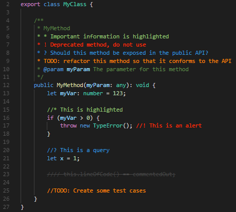

VS Code для вёрстки
По умолчанию комментарии в Visual Studio Code выделяются серым цветом, что может сделать их менее заметными на фоне основного кода. Однако, с использованием плагина Better Comments, разработчики получают возможность значительно улучшить визуальное выделение комментариев в коде.
Этот плагин предоставляет гибкие настройки для акцентирования важных частей комментариев, позволяя, например, выделять их контрастными цветами. Разработчики могут настроить цвета выделений согласно своим предпочтениям или воспользоваться стандартным набором цветов, предоставляемым плагином. Эта функциональность особенно полезна при командной работе, где улучшенная видимость и выделение комментариев способствует более эффективному взаимодействию между участниками проекта.
Такой инструментарий не только повышает читаемость кода, но и содействует более ясному восприятию и анализу комментариев, что в конечном итоге способствует улучшению качества и поддерживаемости кодовой базы.
